السلسلة 118
السيارة (صنف B) · 40 سؤال. كل سؤال فيه الصورة والصوت. اختار الجواب (ولا جوج إلا كانو صحاح)، ورك على «تأكيد» باش تشوف واش صبتي.
- 40سؤال
- 32باش تنجح
- 1 – 4جواب واحد ولا أكثر
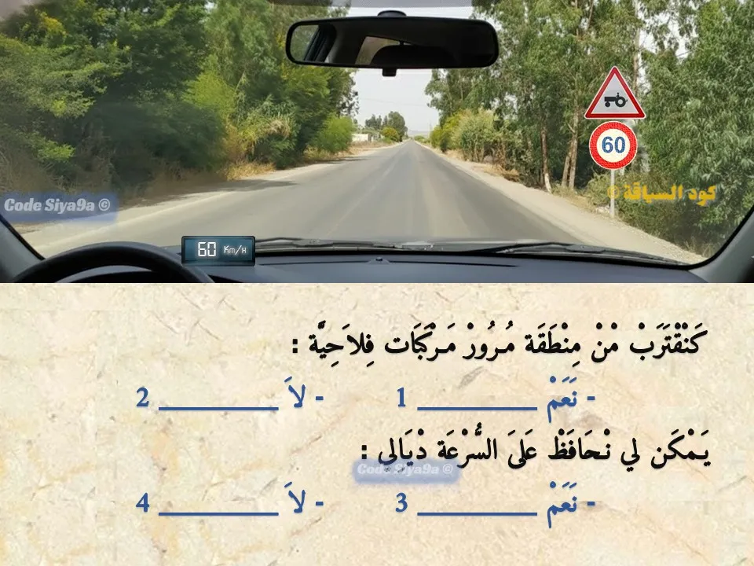
الكلافيي: 1–4 للجواب، Enter للتأكيد وللسؤال الجاي.
السلسلة 118 · النتيجة ديالك
0 / 40
السلسلة 118
السيارة (صنف B) · 40 سؤال، بالصوت، مع الجواب الصحيح والشرح.
السؤال 1
بيّن الجواب
الجواب الصحيح: 1 و 3
هذا العلامات كتعلم على:
- خطر مرور مركبات فلاحية على بعد 150 متر .
- تحديد السرعة في 60 كلم في الساعة.
🚨 في هذا الحالة كاين تحديد السرعة في 60 كلم في الساعة. يعني السرعة المسموح بها نظرا لامكانية وجود خطر .
🫴 و بالتالي يمكن لي نحافظ على السرعة ديالي . و في حالة تواجهت مع مركبة فلاحية غادي ننقص من السرعة و نرد البال .السؤال 2
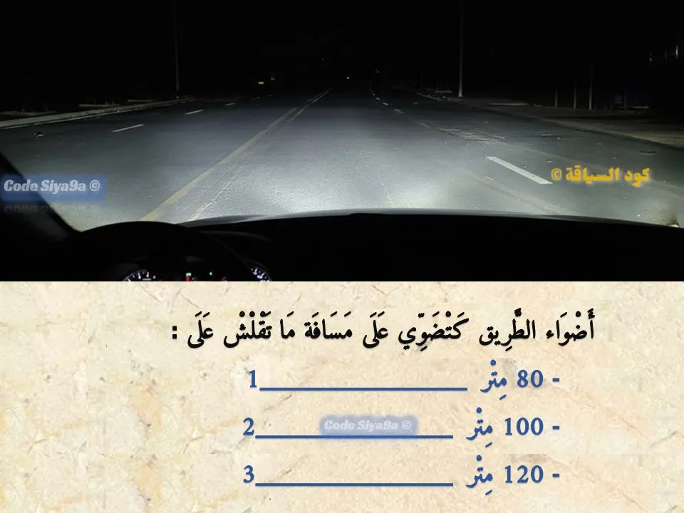
بيّن الجواب
الجواب الصحيح: 2
أضواء الطريق من الواجب تكون كتضوي على مسافة ما تقلش على 100 متر .و من الواجب ضبط و مراقبة علو الشعاع ديالها .
السؤال 3
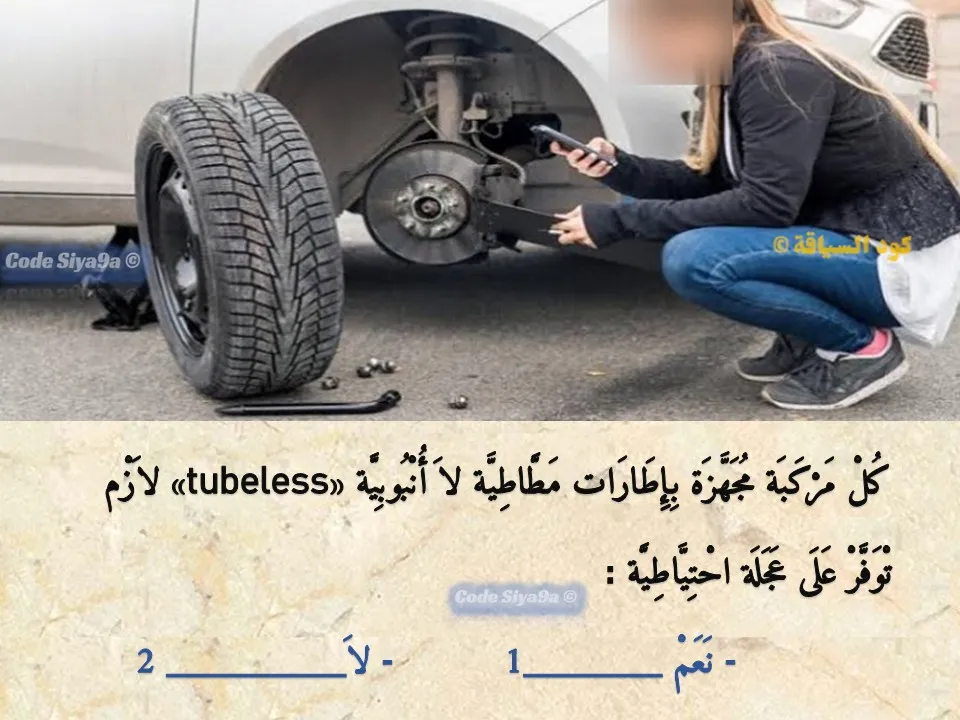
بيّن الجواب
الجواب الصحيح: 1
كل مركبة كتوفر على إطارات مطاطية لا أنبوبية لي كتسمى tubeless . من الواجب توفر على عجلة احتياطية . لانه في بعض الاحيان كيصعاب تصلح التقب او التلف في الإطار . و بالتالي من الواجب تغيير العجة .
السؤال 4
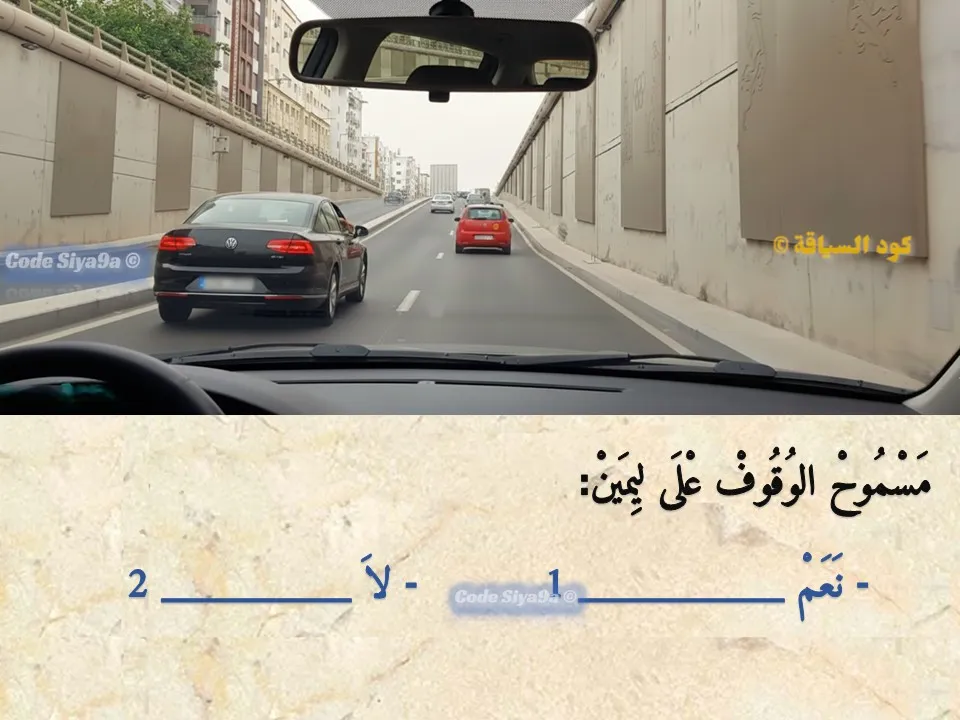
بيّن الجواب
الجواب الصحيح: 2
التشوير الطرقي الافقي (الخطوط ) كتضم :
- خطوط متصلة اقصى اليمين ، هذا الخط المتاصل كيعلم بلي الوقوف و التوقف ممنوع .السؤال 5
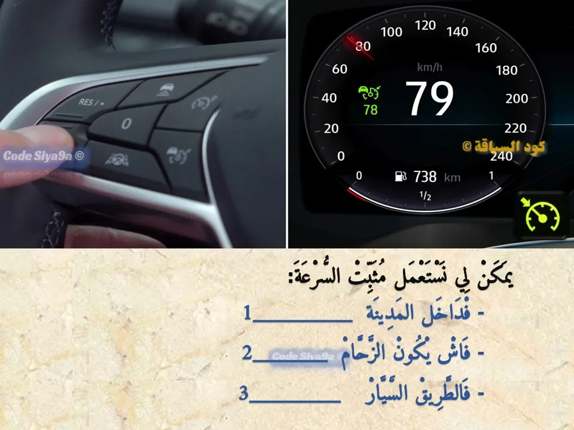
بيّن الجواب
الجواب الصحيح: 3
مثبث السرعة او منظم السرعة هو نظام تلقائي يعمل على التحكم في تتبيث سرعة المركبة في سرعة معينة يحدد السائق او يتم تحديدها بالاعتماد على التشوير الطرقي.
- هذا النظام يمكن لينا نستعملوه فقط في طريق طويلة و مستقيمة تكون خالية من المنعرجات الخطيرة و الاخطار الاخرى فحال الراجلين او خطر مرور حيوانات أليفة .....السؤال 6
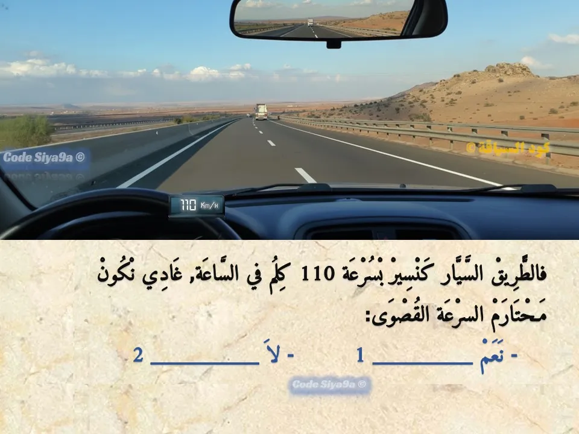
بيّن الجواب
الجواب الصحيح: 1
في الطريق السيار. السرعة كتكون محدودة في 120 كلم في الساعة.
🫴 في هذا الحالة الا كنت كنسير بسرعة 110 كلم في الساعة فانا محترم السرعة القصوى .السؤال 7
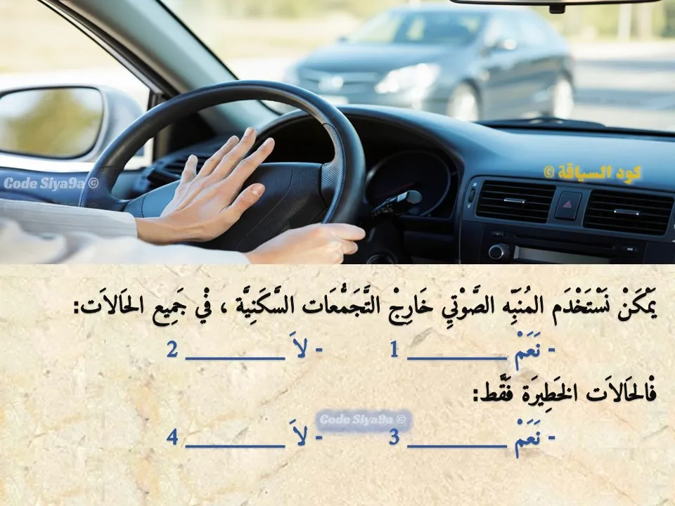
بيّن الجواب
الجواب الصحيح: 2 و 3
المنبه الصوتي ممنوع الاستعمال ديالوا الا في حالة التنبيه على خطر . او التجاوز خارج التجمع السكني .
السؤال 8
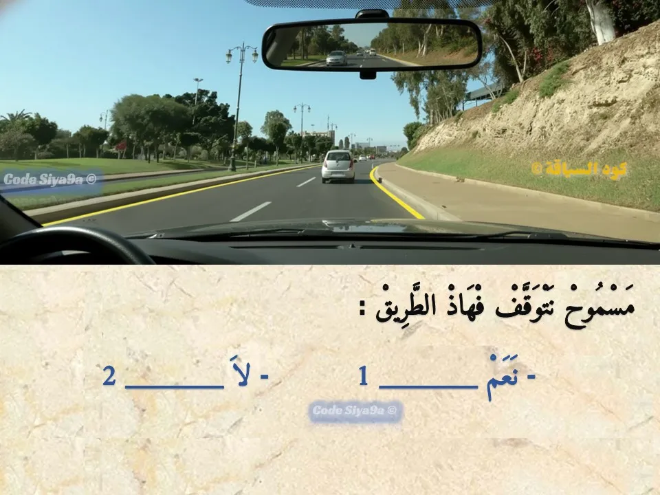
بيّن الجواب
الجواب الصحيح: 2
التشوير الطريق كيضم خط متاصل اقصى اليمين باللون الاصفر ، يعني مؤقت .
- في هذا الحالة ممنوع الوقوف و ممنوع التوقف .السؤال 9
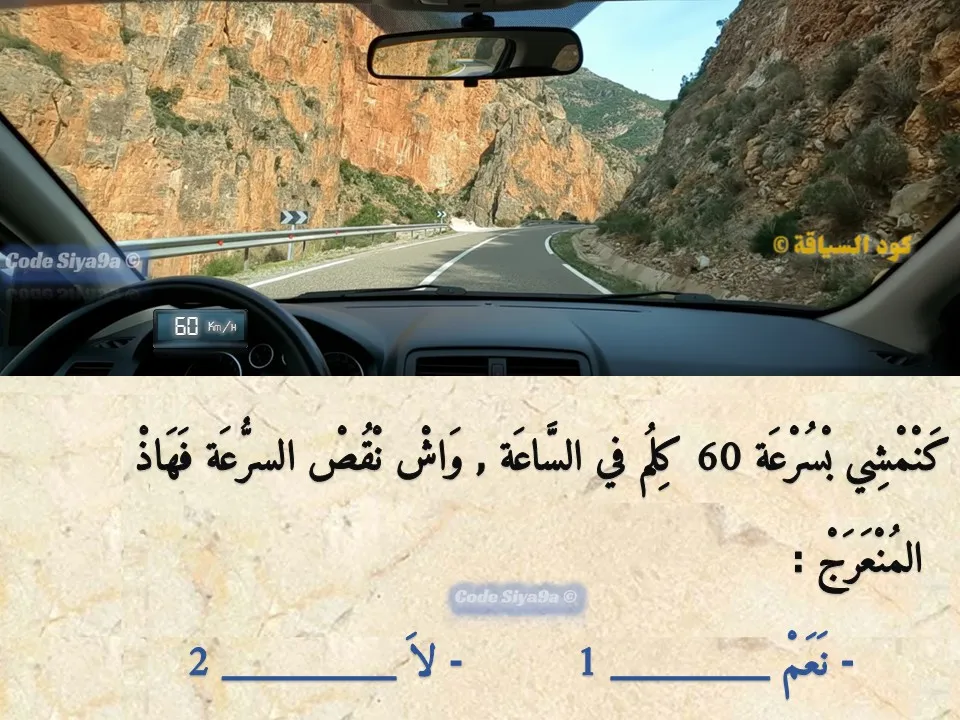
بيّن الجواب
الجواب الصحيح: 1
التشوير الطرقي كيعلم بلي قدامي منعرج خطير . في هذا الحالة واجب عليا ننقص من السرعة حيت الخطر واضح امامي ، و غادي يسعاب عليا ندوز في المنعرج الا كملت بنفس السرعة.
السؤال 10
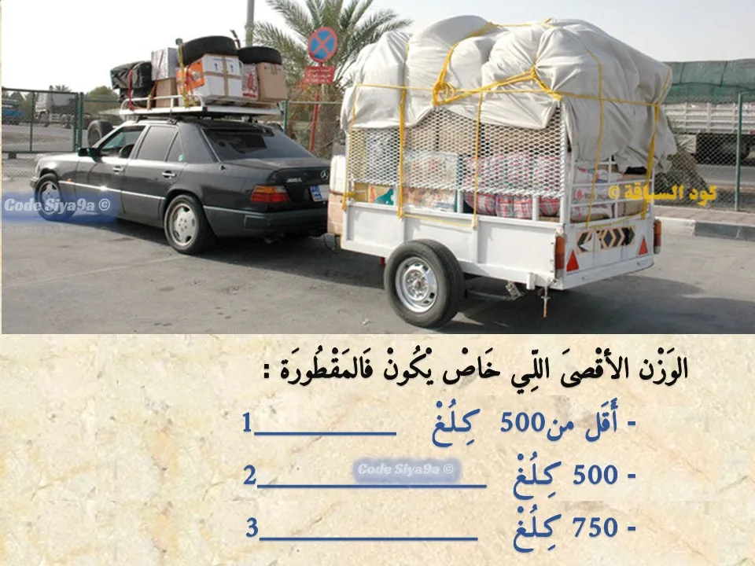
بيّن الجواب
الجواب الصحيح: 3
الوزن الاقصى لي خاص يكون في المقطورة باش نقدر نجرها برخصة سياقة من صنف ب هو 750 كلم .
السؤال 11
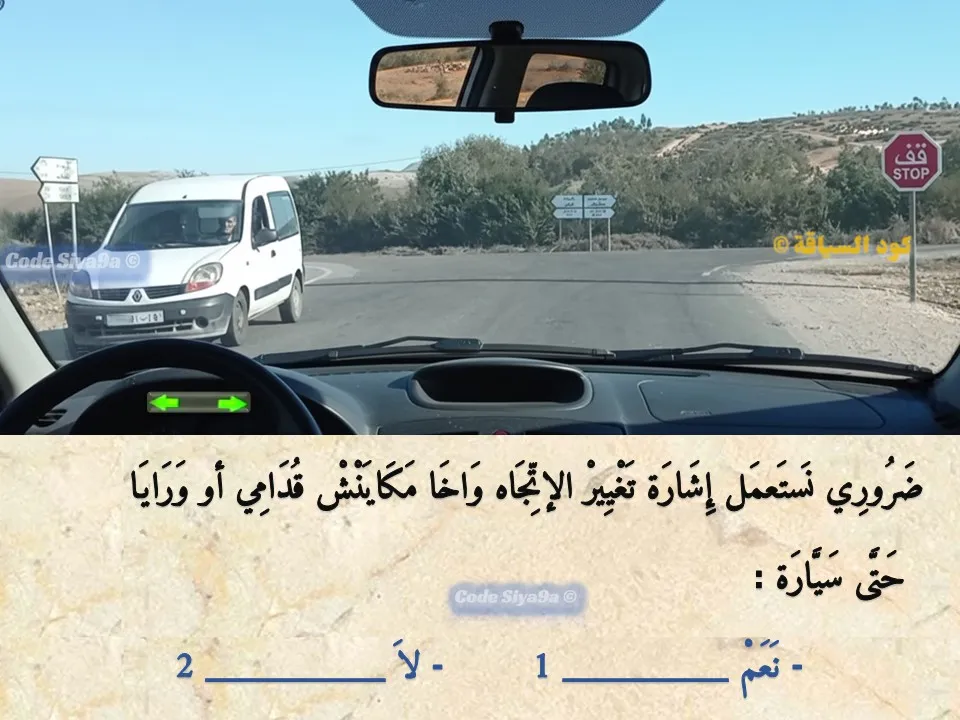
بيّن الجواب
الجواب الصحيح: 1
عند تغير الإتجاه او تغيير المسلك او التجاوز .
➡️ من الواجب عليا استعمال مؤشر تغيير الاتجاه . في حالة عدم استعمال مؤشر تغيير الاتجاه غادي تكون ارتكبتي مخالفة من الدرجة الثالثة .👮السؤال 12
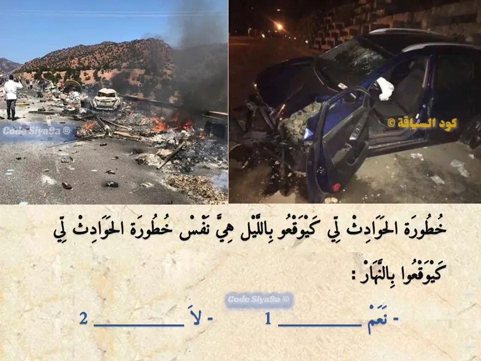
بيّن الجواب
الجواب الصحيح: 2
الظروف الرؤية و الإضائة كتختلف بين الليل و النهار . هذا الشي كيأثر على السياقة .و بالتالي الخطورة ديال الحوادث كتختلف بين الليل و النهار.
السؤال 13
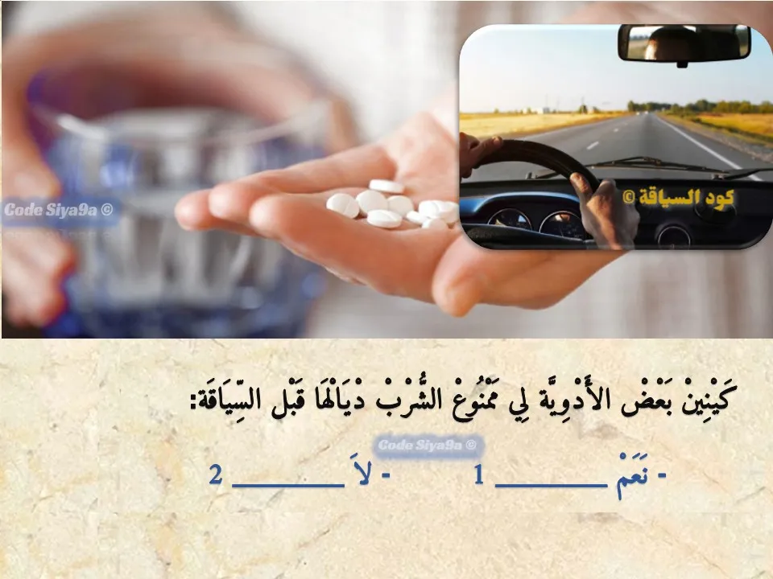
بيّن الجواب
الجواب الصحيح: 1
بعض الأدوية ممكن تسبب النعاس او الإرتخاء ، و ممكن تأدي لضعف التركيز و زيادة وقت رد الفعل.
- هناك بعض الأدوية لي من الضروري اخد استشارة الطبيب من اجل استأناف السياقة .السؤال 14
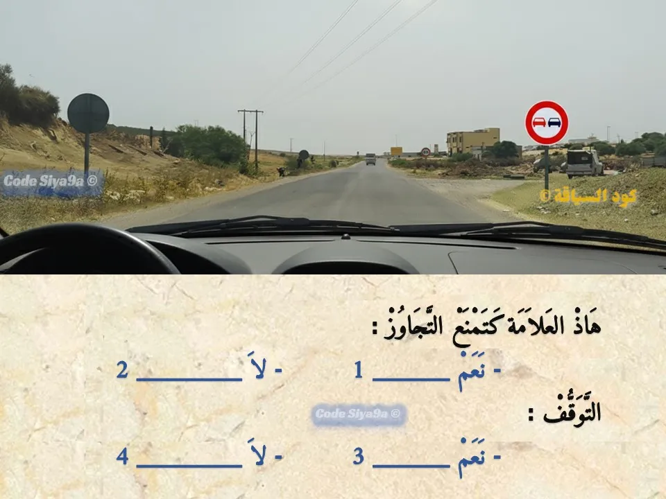
بيّن الجواب
الجواب الصحيح: 1 و 4
هذا العلامة ديال المنع كتعلم بلي التجاوز غادي يصبح ممنوع على جميع انواع العربات .
السؤال 15
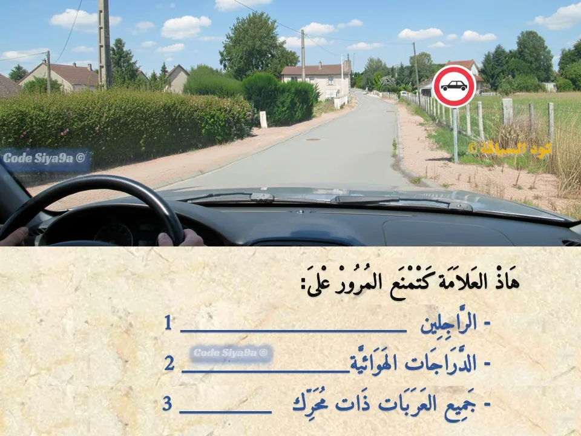
بيّن الجواب
الجواب الصحيح: 3
هذا العلامة ديال المنع كتعلم بلي المرور ممنوع على جميع العربات دات محرك
السؤال 16
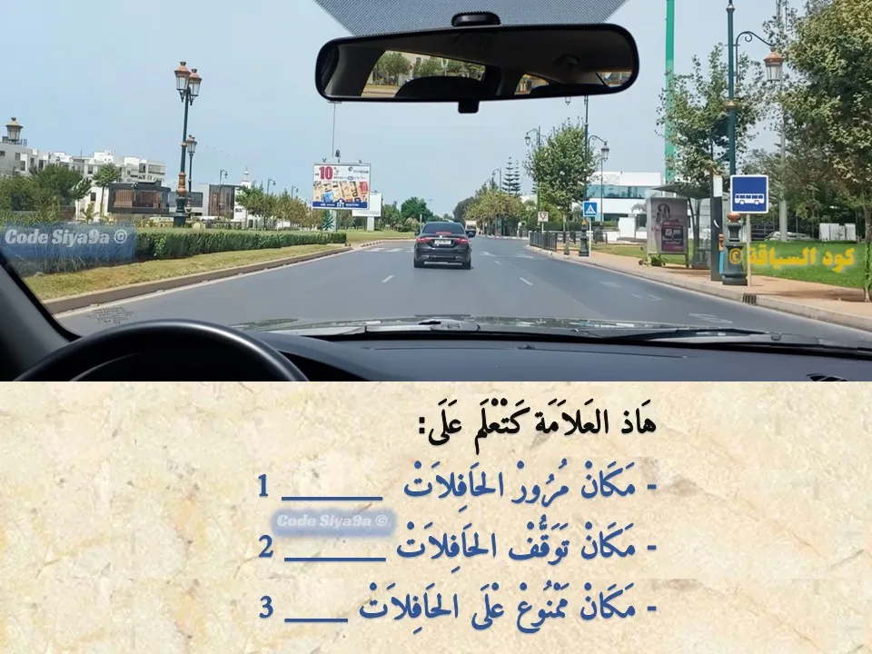
بيّن الجواب
الجواب الصحيح: 2
هذا العلامة ديال الارشاد كتعلم على مكان توقف الحافلات .
السؤال 17
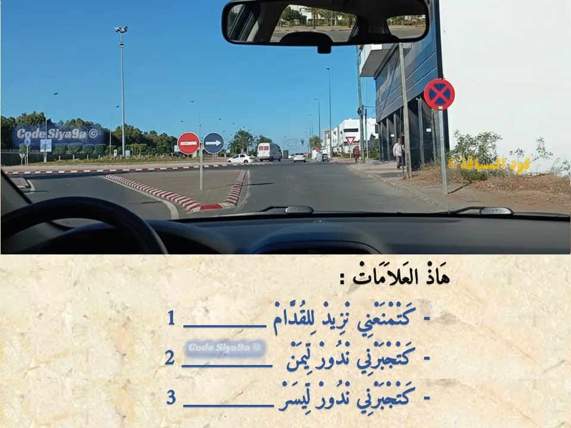
بيّن الجواب
الجواب الصحيح: 2
هذا العلامة ديال الاجبار و المنع، غالبا كيكنوا قبل مدار . كيتم الوضع ديالهم في بداية الارض الفاصلة لي كتفصل بين المسلك لي كادي و لي كيجيب في الاتجاه المعاكس .
- عند وجود هذا العلامات انا مجبر ندور على المدار من جهت ليمن ، و يمكن ليا نستعمل المدار باش ندور على ليسر او ليمن او نكمل السير للامام .
- فهذا الحالة كتجبرني ندور ليمن .و نستعمل المدارالسؤال 18
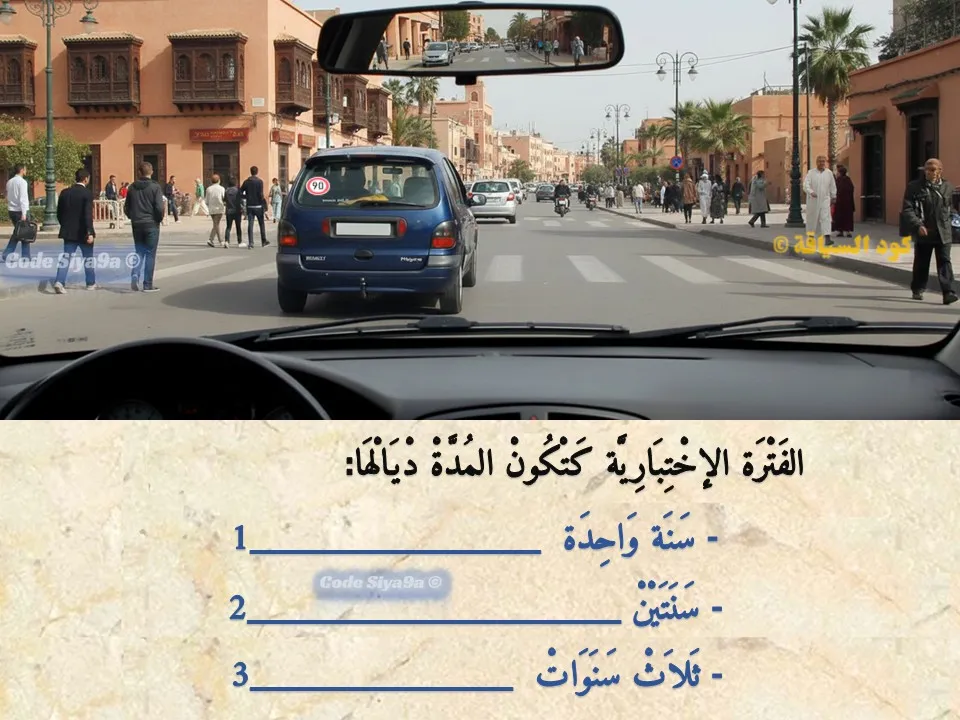
بيّن الجواب
الجواب الصحيح: 2
الفترة الإختيارية كتكون المدة ديالها سنتين و خلال هذا المدة رصيد رخصة السياقة كيكون هو 20 نقطة . و كيكون واحب على السائق يلسق 90 في الخلف ديال السيارة .
السؤال 19
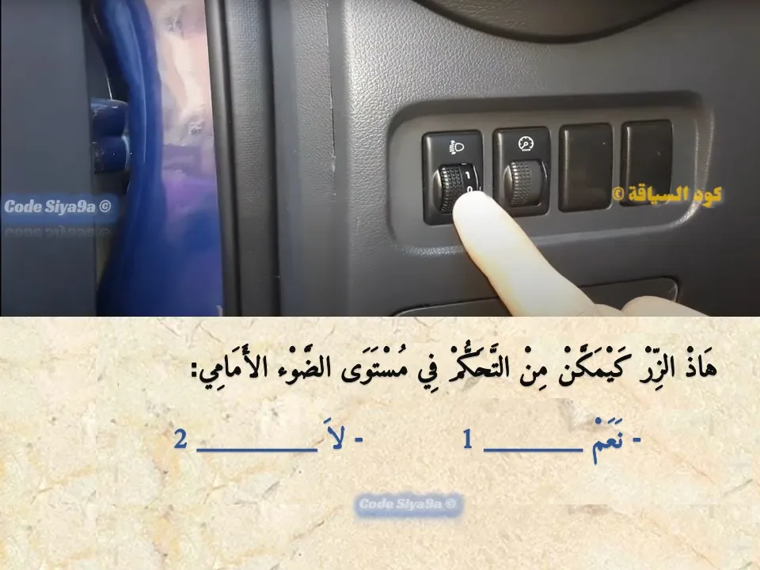
بيّن الجواب
الجواب الصحيح: 1
هذا الزر كيمكن من التحكم في مستوى الضوء الامامي ( أضواء الطريق و التقابل) .
السؤال 20
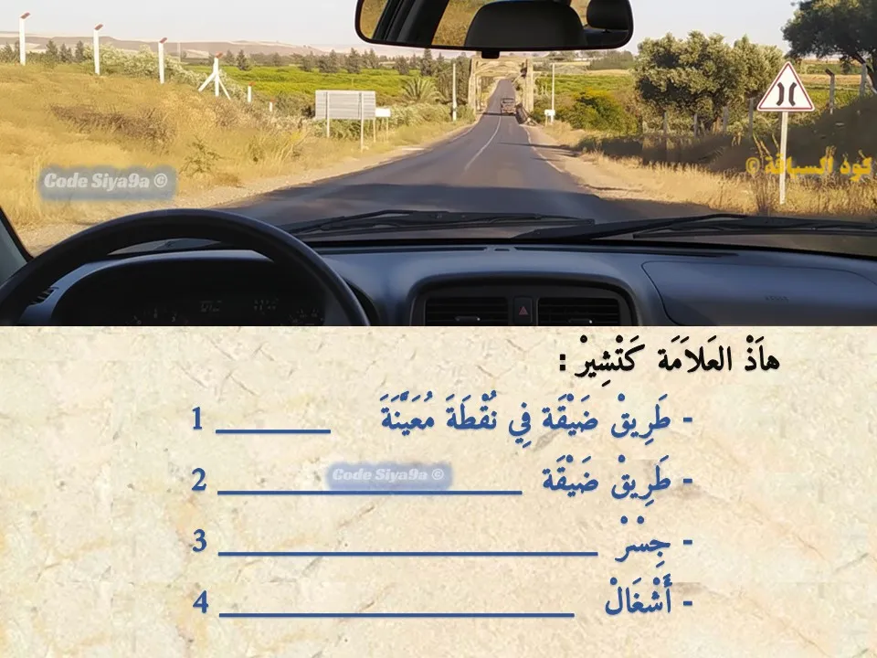
بيّن الجواب
الجواب الصحيح: 1
هذا العلامة ديال الخطر كتعلم بلي غادي نلقى طريق ضيقة في نقطة معينة . من الواجب عليا ننقص من السرعة.
السؤال 21
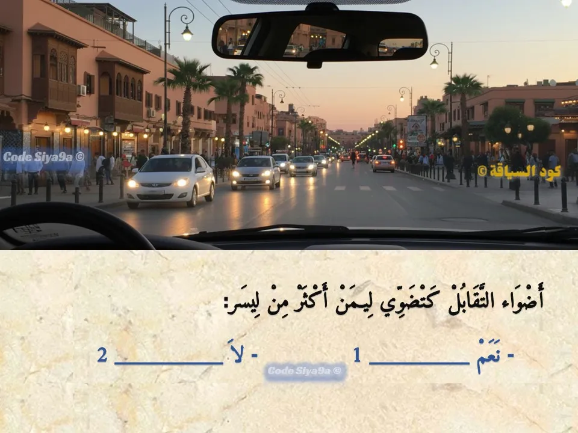
بيّن الجواب
الجواب الصحيح: 1
أضواء التقابل كتكون مضبوطة باش تضوي ليمن اكثر من ليسر .
- في اليسار كيكون التقابل مع مستعملي الطريق الاخرين و بالتالي باش ما يتعرضوش للابهار ،خاص الأضواء تكون نازلة شوية .
- في اليمن ديال الطريق كيكون خاوي و غالبا كيكون اخطار فحال راجلين او دراجات . و بالتالي خاص الضوء يكون زايد شوية باش تكون رؤية واضحة.السؤال 22
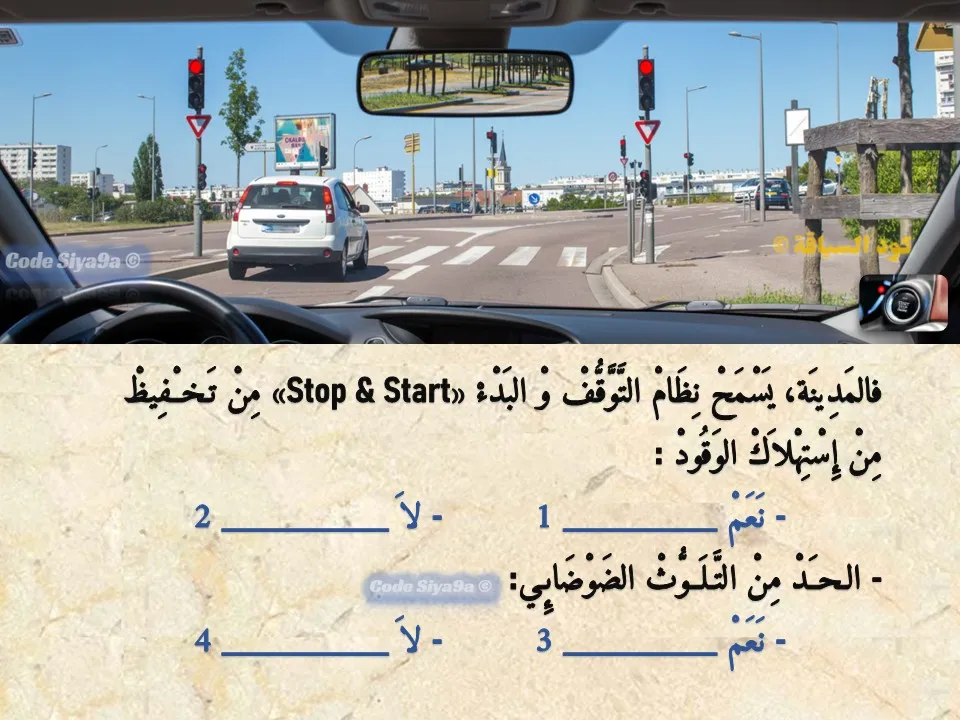
بيّن الجواب
الجواب الصحيح: 1 و 3
نظام التوقف و البدأ . كيقوم بتوقيف اشتغال المحرك في حالة التوقف في ملتقى الطرق عند الضوء الاحمر مثلا ..... ، و كيقوم بتغير المحرك بمجرد ما تضغط على دواسة الواصل (لمرياج)
- من طبيعة الحال الا كانت محرك السيارة كيتوقف اثناء الوقوف غادي يقلل من الثلوث الضوضائي (الصداع ديال المحرك)السؤال 23
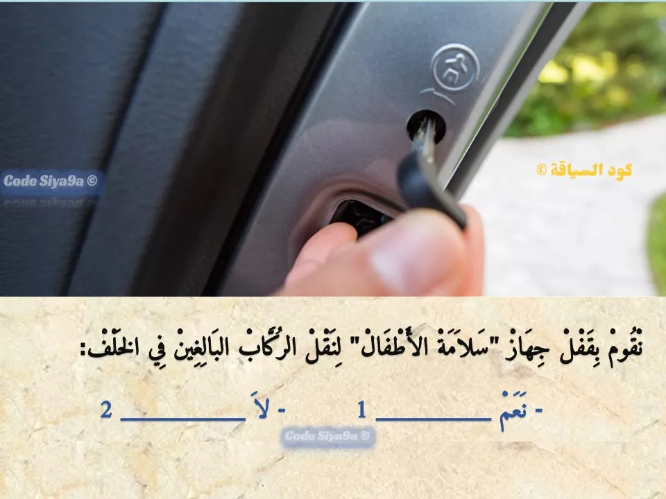
بيّن الجواب
الجواب الصحيح: 2
جهاز سلامة الأطفال كيمكن من قفل الأبواب الخلفية من الداخل و بالتالي كيمنع الأطفال من أنهم يقوموا بفتح الأبواب من الداخل .
- هذا الجهاز كنستعملوه فقط لنقل الاطفال فقط .السؤال 24
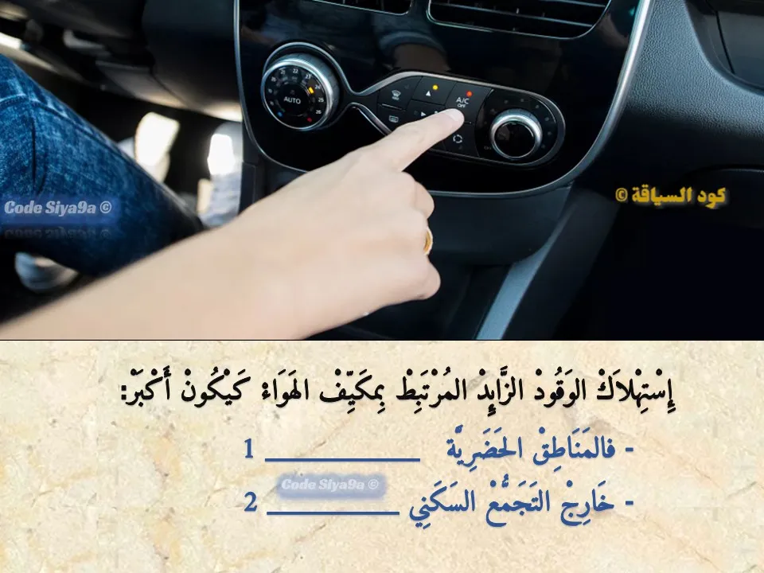
بيّن الجواب
الجواب الصحيح: 1
مكيف الهواء هو عبارة محرك يعمل بالاعتماد على محرك السيارة. حيت كلما زاد وثيرة الاشتغال ديالوا كلما كيزيد من سرعة دوران محرك السيارة.
- خارج المدينة السرعة كتكون كبيرة و بالتالي سرعة دوران المحرك كتكون اكثر .
- في داخل المدينة كتكون السيارة كتسير بسرعة قليل و بالتالي محرك مكيف الهواء كيجبر محرك السيارة باش يزيد في سرعة اشتغال محرك السيارة مما كيأدي لاستهلاك اكبر للوقود .السؤال 25
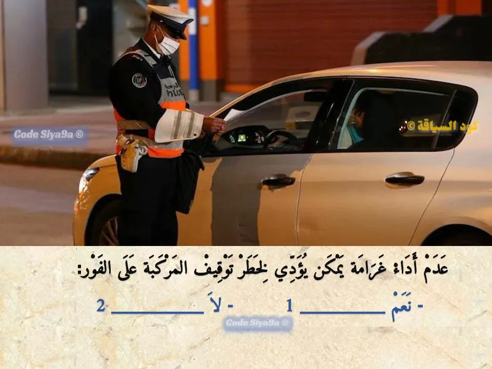
بيّن الجواب
الجواب الصحيح: 2
في حالة ارتكاب مخالفة لي كتعرضك لغرامة. في الحالة عند عدم اداء الغرامة يتم الاحتفاظ بشهادة تسجيل المركبة او رخصة السياقة للسائق .
و كيتم تسليم وصل من اجل أداء الغرامة و استرجاع رخصة السياقة او شهاذة تسجيل المركبة.
و لا يتم توقيف المركبة .السؤال 26
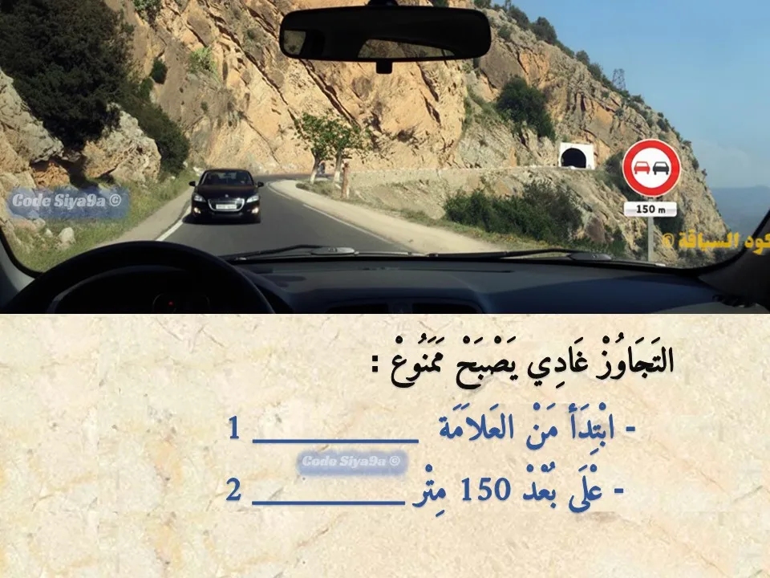
بيّن الجواب
الجواب الصحيح: 2
التشوير الطرقي كيعلم بلي التجاوز غادي يصبح ممنوع.
- علامة المنع تحت منها علامة تكميلية فيها 150 متر . يعني المنع غادي يطبق على بعد 150 متر .السؤال 27
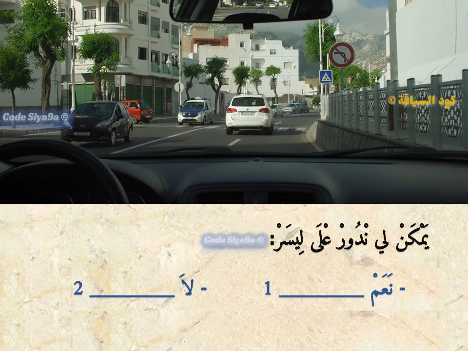
بيّن الجواب
الجواب الصحيح: 2
هذا العلامة ديال المنع كتعلم بلي ممنوع تغيير الاتجاه ليسر في هذا ملتقى الطرق.
السؤال 28
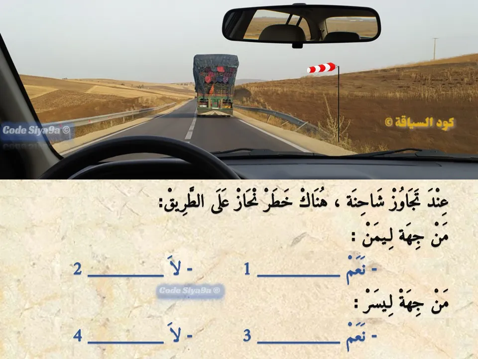
بيّن الجواب
الجواب الصحيح: 1 و 3
عند تجاوز شاحنة . ممكن الريح يتغير الاتجاه ديالوا .
- الريح في هذا الحالة جاي من جهت ليمن يعني . و عند التقابل مع الشاحنة غادي تحجب الريح و ممن يتكون تيار معاكس لي يقوم بجرك لعند الشاحنة .
او ممكن الريح يغير الاتجاه .السؤال 29
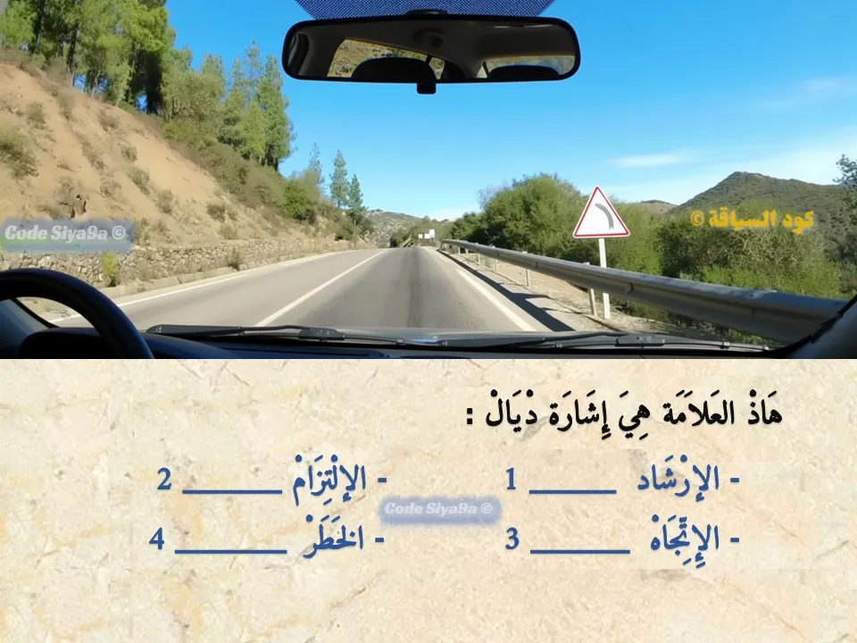
بيّن الجواب
الجواب الصحيح: 4
هذا العلامة ديال الخطر . كتعلم على منعرج على ليمن على بعد 150 متر .
السؤال 30
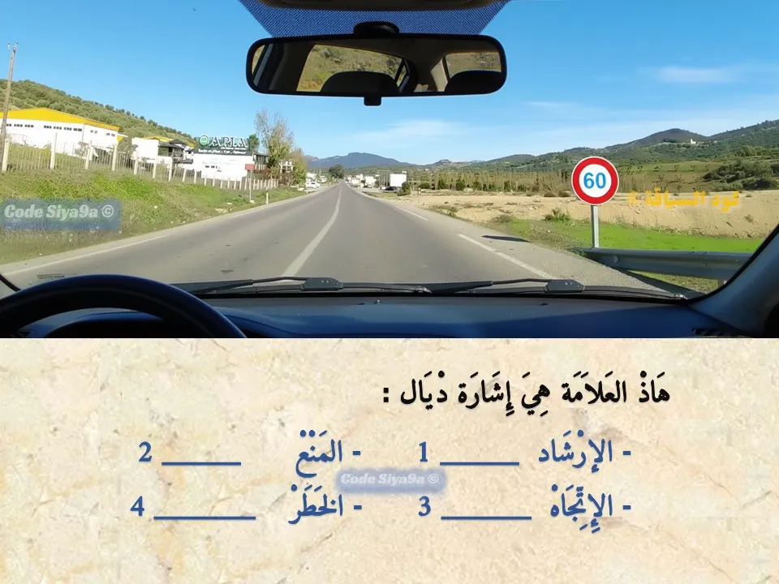
بيّن الجواب
الجواب الصحيح: 2
هذا العلامة هي علامة ديال المنع .
- كتعلم بلي السرعة غادي تصبح محدودة في 60 كلم في الساعة.السؤال 31
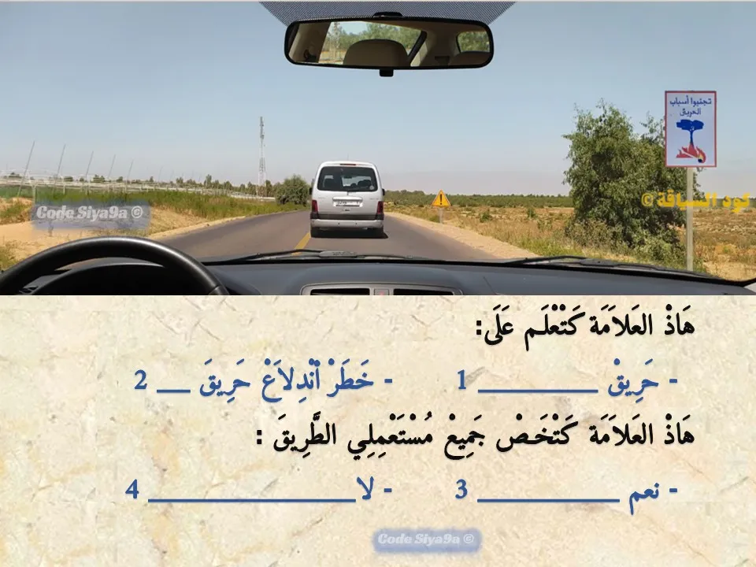
بيّن الجواب
الجواب الصحيح: 2 و 3
هذا العلامة ديال الارشاد، كتعلم على خطر اندلاع حريق في هذا الغابة . و بالتالي واحب عليا عدم القيام بأي شيء لي ممكن يتسبب في اندلاع حريق .
- من طبيعة الحال هذا العلامة كتخص جميع مستعملي الطريق .السؤال 32
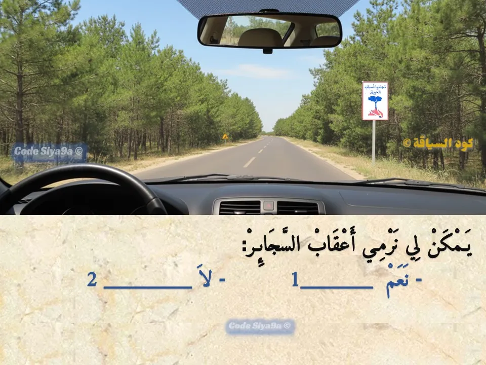
بيّن الجواب
الجواب الصحيح: 2
هذا العلامة ديال الارشاد، كتعلم على خطر اندلاع حريق في هذا الغابة . و بالتالي واحب عليا عدم القيام بأي شيء لي ممكن يتسبب في اندلاع حريق .
- من طبيعة الحال هذا العلامة كتخص جميع مستعملي الطريق .السؤال 33
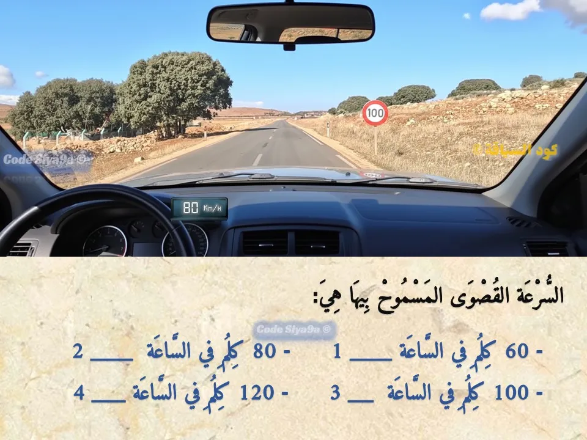
بيّن الجواب
الجواب الصحيح: 3
هذا العلامة ديال المنع كتعلمني بلي السرعة محدودة في 100 كلم في الساعة.
السؤال 34
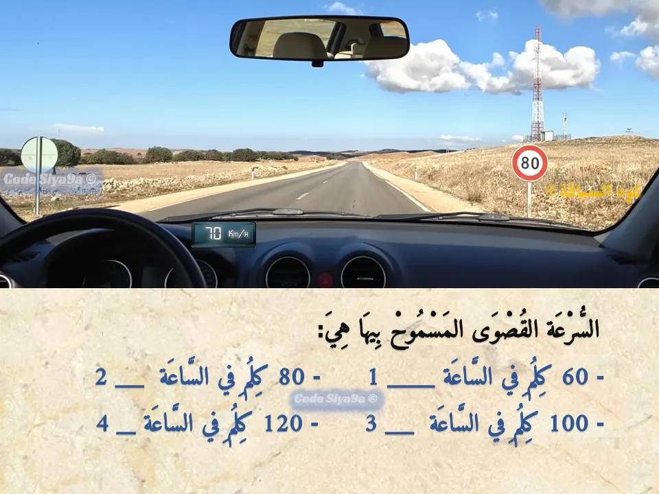
بيّن الجواب
الجواب الصحيح: 2
هذا العلامة ديال المنع كتعلمني بلي السرعة محدودة في 80 كلم في الساعة.
السؤال 35
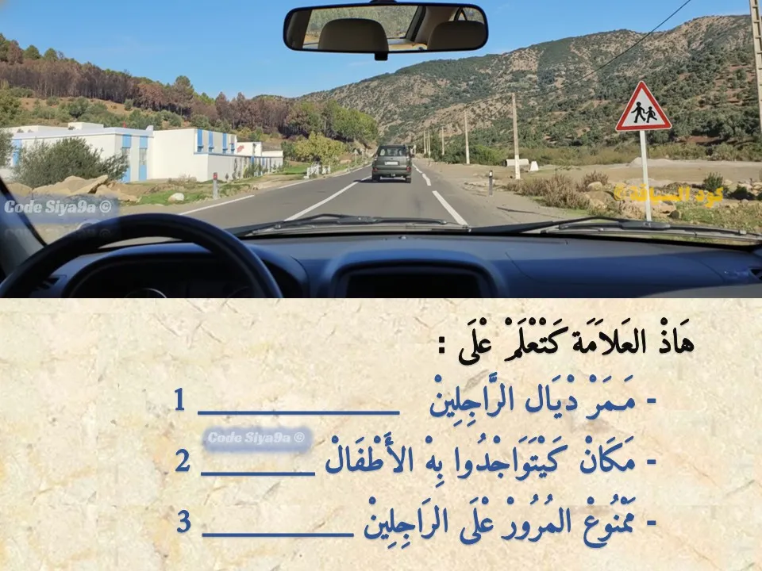
بيّن الجواب
الجواب الصحيح: 2
هذا العلامة ديال الخطر كتعلم على مكان كيتواجدوا فيه الأطفال .و بالتالي واحب عليا ننقص من السرعة و نرد البال .
السؤال 36
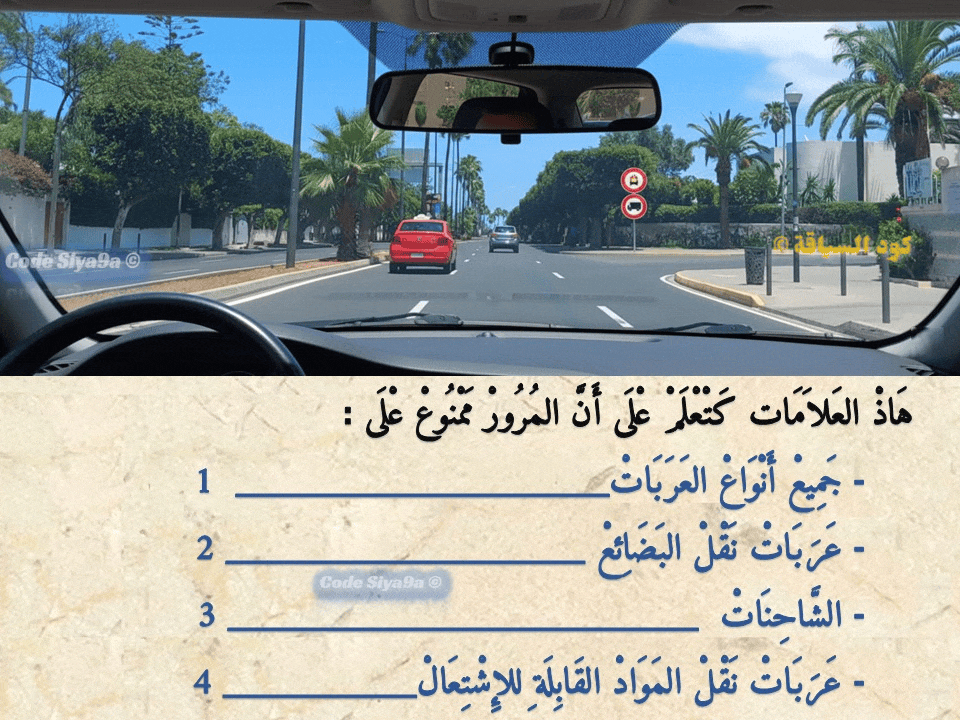
بيّن الجواب
الجواب الصحيح: 2 و 3 و 4
هذا العلامات :
- علامة منع المرور على عربات نقل المواد القابلة الاشتعال .
- علامة منع المرور على الشاحنات او عربات نقل البضائع.السؤال 37
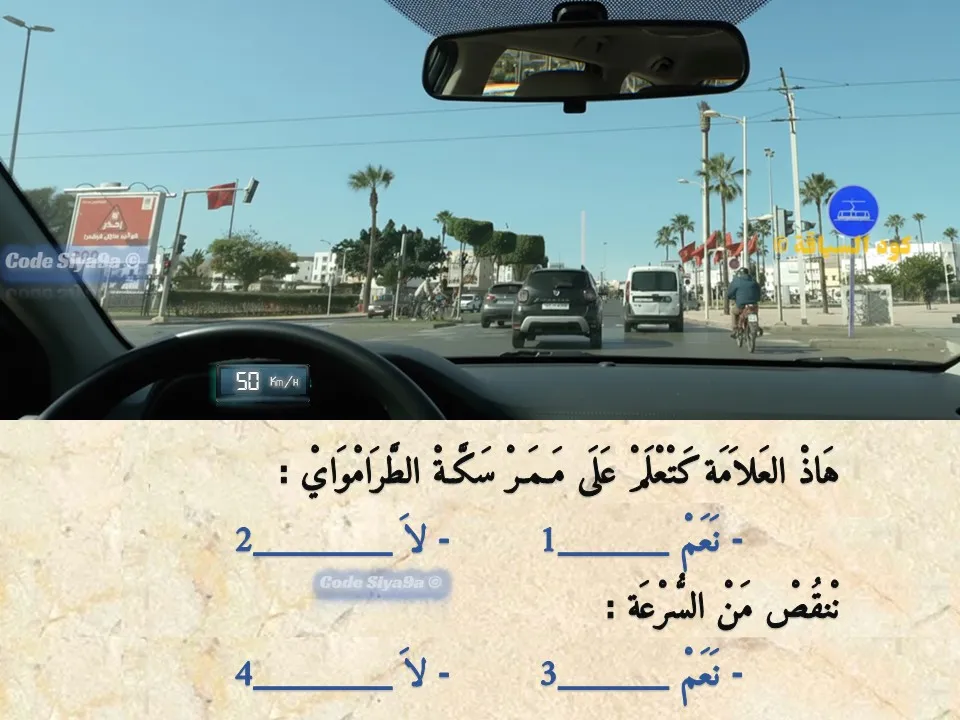
بيّن الجواب
الجواب الصحيح: 1 و 3
هذا العلامة ديال الاجبار كتعلمني على ممر سكة الطرامواي . من الواجب عند المرور في هذا النوع من الملتقيات ،ننقص من السرعة وننتبه انا المسلك خاوي عاد ندوز .
السؤال 38
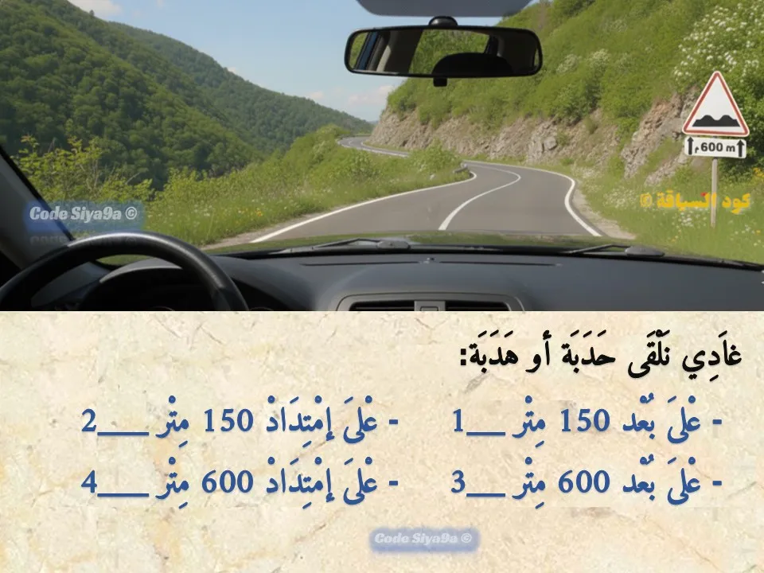
بيّن الجواب
الجواب الصحيح: 1 و 4
- هذا العلامة ديال الخطر . كتعلم على خطر هدبة او حدبة على الطريق على بعد 150 متر .
- تحت من العلامة كاين علامة تكميلية فيها 600 متر و اسهم للأعلى .يعني على امتداد 600 مترالسؤال 39
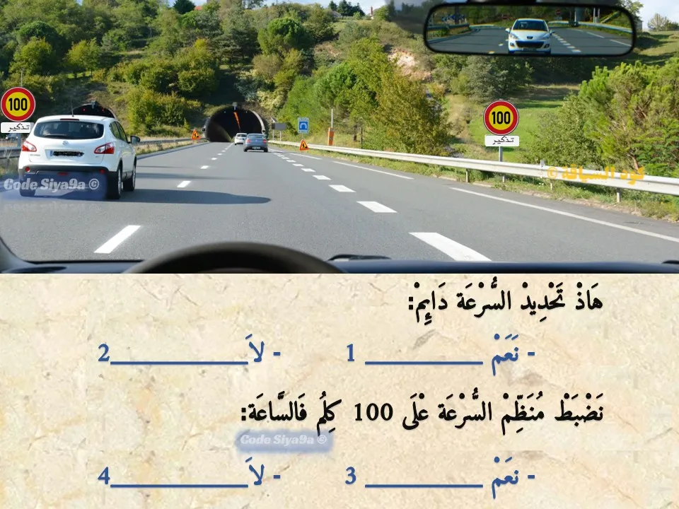
بيّن الجواب
الجواب الصحيح: 2 و 4
التشوير الطرقي باللون الاصفر مؤقت .
- هذا العلامة ديال تحديد السرعة مؤقتة .
🚨 في هذا الحالة كاين قدامي تحديد السرعة و علامة ديال اشغال .
و بالتالي واجب عليا نكون حذر .
- في هذا الحالة ما يمكنش لي نستعمل منظم او مثبث السرعة.السؤال 40
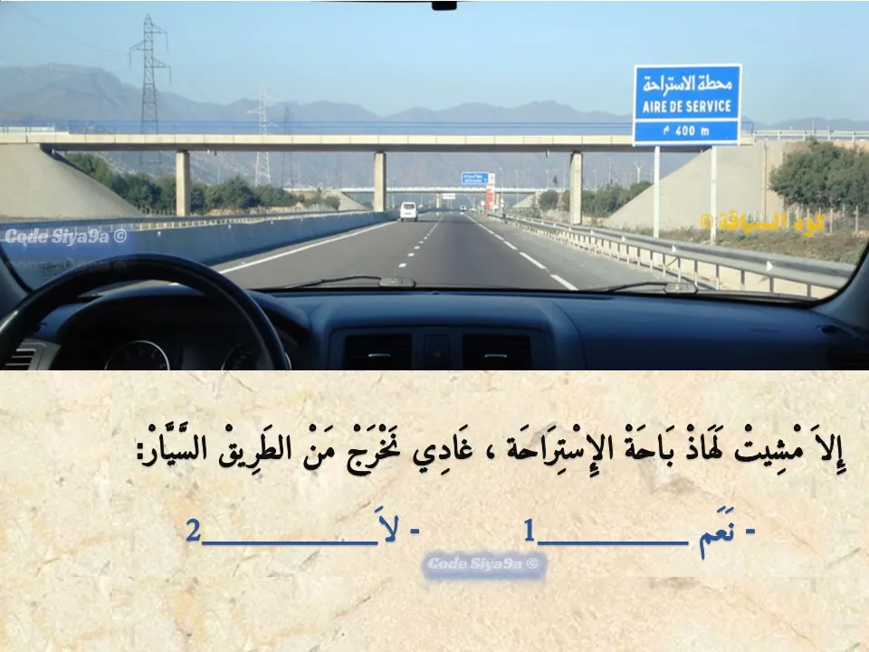
بيّن الجواب
الجواب الصحيح: 2
باحة الاستراحة هي جزء من الطريق السيار كتمكن مستعملي الطريق من الاستراحة و التزود بالوقود و..... ،
- الا مشيت لباحة الاستراحة غادي نبقى في الطريق السيار.